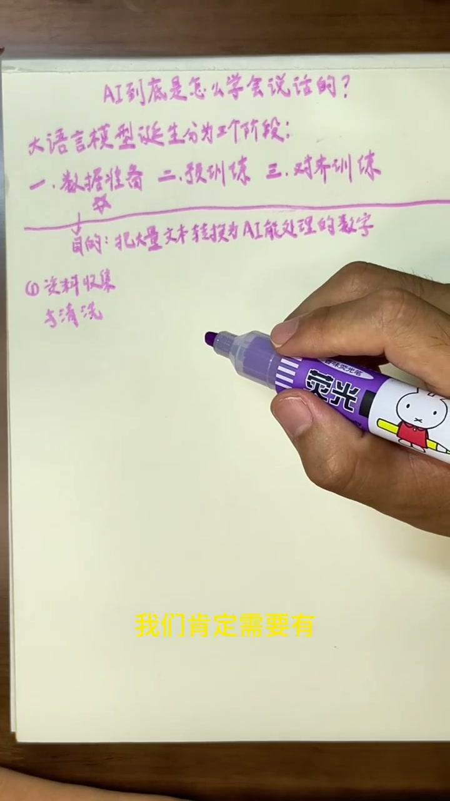
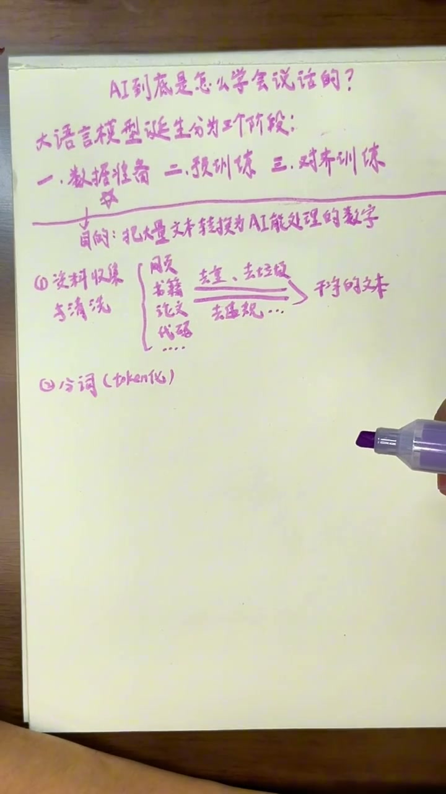
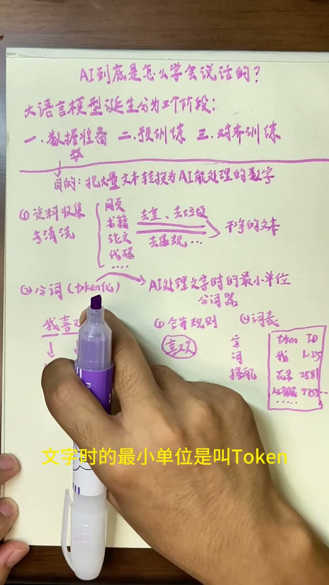
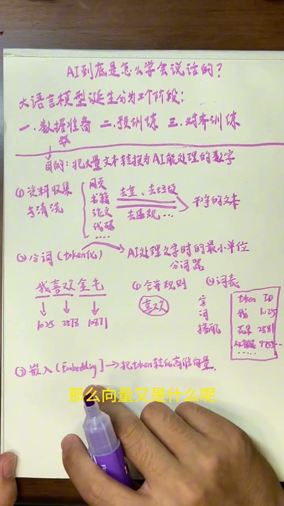

开场：大语言模型的三大阶段
00:00AI到底是怎么学会说话的？这个过程既神奇又复杂。博主用费曼学习法，把学到的知识用自己的话讲出来。像豆包、DeepSeek、ChatGPT这些可以直接对话的AI，本质上都属于大语言模型。大语言模型的诞生分为三大阶段：数据准备、预训练、对齐训练。今天主要讲数据准备这一阶段。
第一步：资料收集与清洗
00:39要想让AI学会说话，首先需要庞大的知识库给它学习。这些知识包括海量的网页、书籍、论文、代码等等。但从全网收集来的数据并不能直接使用。

00:59收集到数据后，需要进一步清洗：
- 去重：删除重复的数据
- 去噪：删除没有含义的垃圾数据
- 过滤：过滤掉敏感与违规的信息
经过清洗后，我们就能得到一个干净的文本库，这是第一个步骤。
第二步：分词（Token化）
01:15第二步叫分词，也称之为Token化。Token是AI处理文字时的最小单位。对于人而言，一个单独的字是我们阅读的最小单位；但AI不是，它的最小单位叫Token。一个Token可能是一个字，也可能是好几个字。

01:37以"我喜欢金毛"为例，分词后可能被分成我、喜欢、金毛三个Token。每个Token都有一个数字编号（ID），比如"我"是1025、"喜欢"是2578、"金毛"是10871。
02:04在分词之前，需要先训练一个分词器（Tokenizer）。分词器做了两件事：
- 建立合并规则：通过阅读大量文本，发现哪些字经常一起出现（如"喜欢"），就把它们合并成一个Token。
- 建立词表：包含所有常见字词和搭配，每个Token都有一个ID编号。像GPT这样的大模型，词表通常有数十万个词条。
为什么需要给每个Token一个ID？因为计算机只认识数字。以后计算机见到ID为1025，它就知道对应的是"我"这个字。
插播：为什么AI不能精确控制字数？
03:23博主分享了一个学完分词后的恍然大悟：当你让AI严格生成具体字数（比如写一个100字的短文），它通常做不到——总是"大约100个字"。

这个例子体现了普通人了解AI底层原理的意义：我们不是要像科学家一样研究复杂的技术，而是为了知道AI为什么可以做某些事情，又为什么做不好另外一些事情，从而更准确高效地使用它。
第三步：嵌入（Embedding）
04:25第三步叫嵌入，英文是Embedding。一句话概括：把每个Token转换为一个高维向量。
向量其实不复杂——它就是一组按顺序排列的数字集合，比如0.72、0.56、0.43……这样一组数就代表一个向量。向量里有多少个数字，就是多少维。

05:01像GPT这样的大模型，可能把每个Token（比如"我"这个字）生成一个由上万个小数组成的向量来表示它。这些向量在建立时是随机的。
为什么要把Token对应成上万维的向量？因为计算机不能像人一样直接理解文字，只能进行数字计算。一个词有非常多含义和联系——"喜欢"包含丰富的情感，还和很多词有关联——这些含义和联系就用一堆数字来量化和表示。
06:06最初这些数字是随机的，但经过训练后会变得有意义：
- "再见"和"拜拜"含义接近 → 训练后它们的向量在数字上也比较接近
- "小猫"和"小狗"都和动物有关 → 它们的向量在某个维度上也接近
总结：数据准备全流程
06:32数据准备阶段的三步流程：
- 全网搜集大量知识，并进行清洗，得到干净的文本库
- 把文本分成一个个带有编号的Token（分词/Token化）
- 把每个Token转换成一个随机的高维向量（嵌入/Embedding）
这就是整个数据准备的过程。下一节将讲解预训练（Pre-training）的过程。